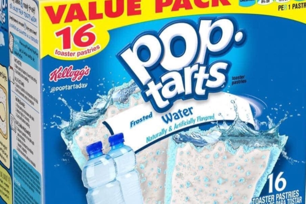
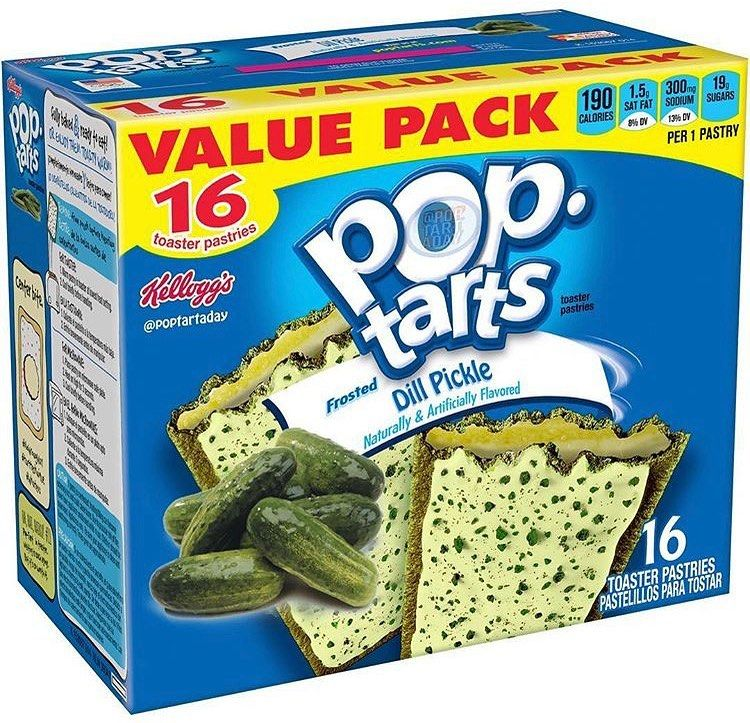
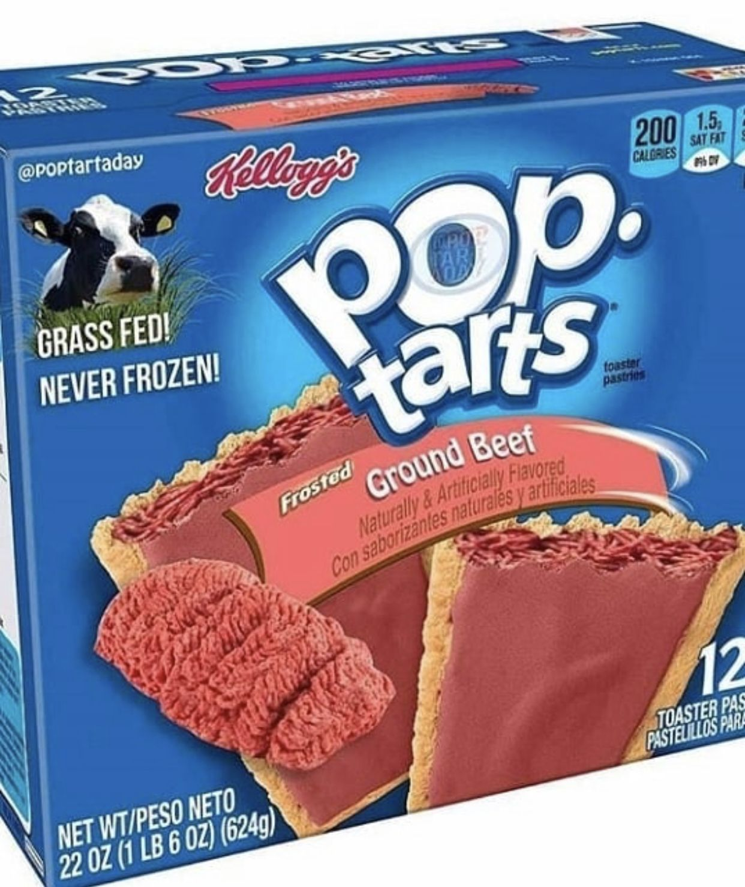
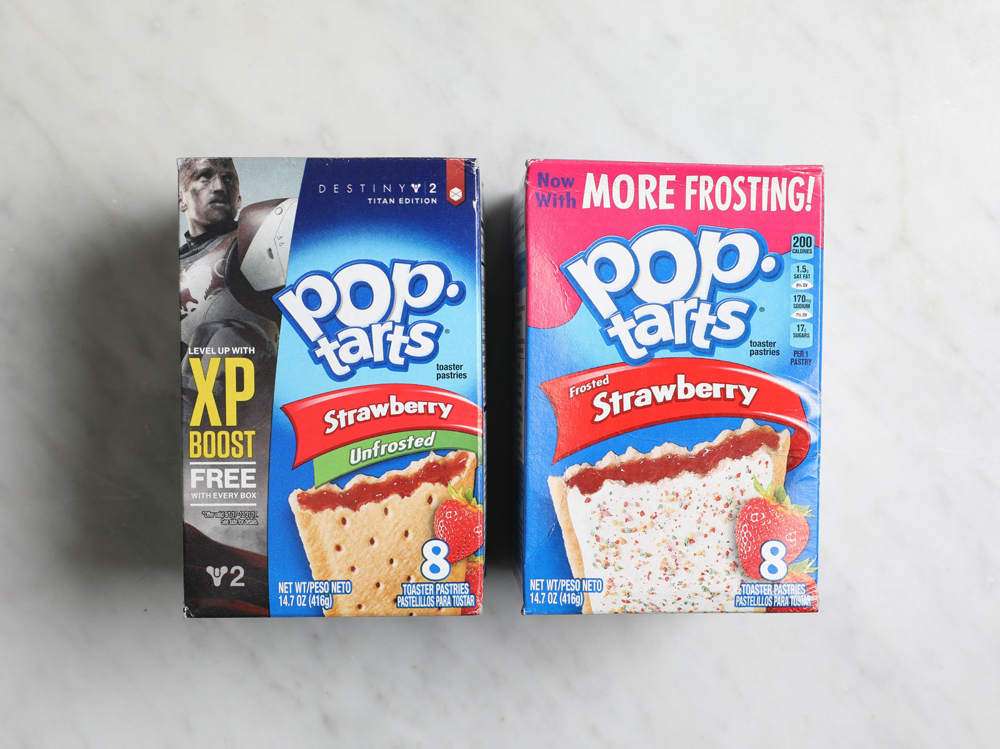

Here is a water poptart.

Here is a pickle poptart

Here is probably the grosest fake poptart I've seen so far.

According to the poptart tier charts, strawberry is the top flavor. In my opinion it's not but to the rest of the world thinks it is.